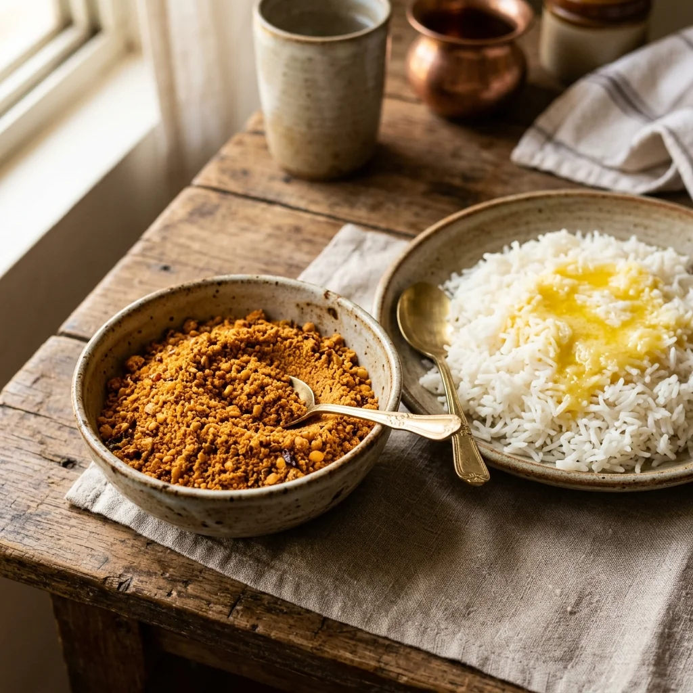

Kandi Podi
Classic Lentil Powder
Roasted toor & chana dal ground with cumin & dry red chilies. The ultimate homemade comfort food.
Sizes & Prices
- 100g — ₹129
- 250g — ₹259
- 500g — ₹449
Key Ingredients: Toor dal, chana dal, cumin, dry red chilies.
← Back to Menu